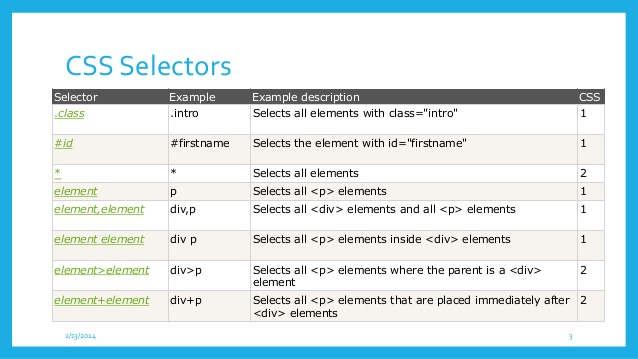

As discussed in the previous chapter, HTML lays out the structure of a document. With HTML attributes, programmers can add some specification to tags. Yet, when programmers make pages with only HTML, the web pages look rather bland. When making a web site, the structure of the page elements is important, as is how those elements appear. While HTML creates the structure and content of the page, CSS adds the styling to make it beautiful! Cascading Styling Sheets (CSS) is a style sheet language that allows programmers to add styling to web documents. With CSS, programmers can change background and font colors, the size of different elements, and many more things. CSS works by applying style rules to different elements. A style rule could be: "Make this lettering purple" or "Make this font Helvetica". CSS is a cascading style sheet language because the style rules apply based on a specific precedence, so the rules "cascade".
